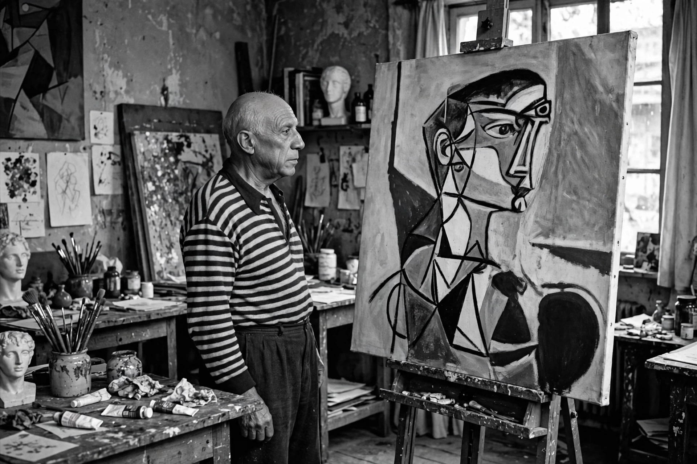

Pablo Picasso

[Image: Black-and-white photograph of Pablo Picasso in his studio, 1950s]
Pablo Picasso (25 October 1881 – 8 April 1973) was a Spanish painter, sculptor, printmaker and ceramicist who spent most of his adult life in France. Co-founder, with Georges Braque, of Cubism, and inventor of constructed sculpture and co-inventor of collage, he is among the most influential artists of the 20th century.
Work
Picasso's long career is often divided into periods — Blue, Rose, African-influenced, Analytic and Synthetic Cubism, neoclassical and surrealist phases. Landmark works include Les Demoiselles d'Avignon (1907), which heralded Cubism, and Guernica (1937), a monumental anti-war painting responding to the bombing of the Basque town during the Spanish Civil War, now in the Museo Reina Sofía in Madrid.
Legacy
Exceptionally prolific — his catalogue runs to tens of thousands of works — Picasso reshaped modern art across media and remains one of the most recognised and most valuable artists at auction.